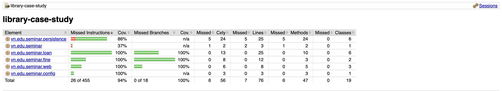

Unit Test là gì?
- Kiểm tra hàm, phương thức, lớp
- Mỗi test một hành vi
- Phát hiện lỗi sớm, khoanh vùng nhanh
- Không thay integration test
Seminar · Kiểm thử phần mềm
Coverage gate với JUnit, JaCoCo và GitHub Actions
 JUnit
JaCoCo
JUnit
JaCoCo
 GitHub Actions
GitHub Actions
Case study: FineCalculator · 30 phút
Câu hỏi chính
Chuẩn bị dữ liệu, dependency
Gọi hành vi cần kiểm tra
So với kết quả mong đợi
assertNotNull(fee)chưa đủassertEquals(6000, fee)đúng nghiệp vụBắt lỗi nhầm < và <=
FineCalculatorAiDataTest.java
4 / 5 dòng đã chạy
1 / 2 nhánh
Đã chạy ≠ đã kiểm tra đúng
Coverage gap → quay lại yêu cầu, không chỉ tô xanh

Báo cáo JaCoCo của case study (23/10/2026)
Thành viên thường
2.000đ / ngày
Thành viên VIP
Miễn 2 ngày đầu
sau đó 1.000đ / ngày
Phí tối đa
50.000đ
Bị từ chối
Ngày âm · hạng rỗng
Pizzorno & Berger · FSE 2025
11/39 → 38/39
line coverage
2/16 → 15/16
branch coverage
Nhóm thử trên source Python của dự án
Lukasczyk, Kroiß & Fraser · EMSE 2023
81,48%
coverage, module benchmark
10 pass · 5 xfail
Cả hai công cụ: khó xác định kết quả đúng
70% → 100%
branch coverage · demo FineCalculator
Test xanh + coverage 100% = chương trình đúng?
Chưa đủ.
Hỏi đáp?
Cảm ơn thầy cô và các bạn đã lắng nghe